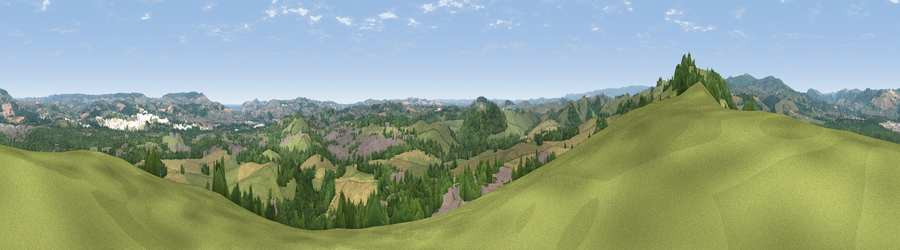

Viewpoint near Liverton Coldeast
#7478 in England · top 15% of its area beats it · near Liverton Coldeast · access?Where it is
The exact computed spot (SX 82738 73262). Click the marker for map links.
Public access: no public right of way or access land is recorded at this exact spot — it may be on private land. Computed from Natural England's CRoW access layer and OpenStreetMap rights of way — not the legal definitive map. Always verify locally.
The view, rendered

A 360° render of this exact spot computed from the terrain model, tree cover and land cover — summer colours, afternoon light, calibrated against photographs of famous viewpoints. Real trees, hedges and buildings will differ in detail.
The panorama
Grey silhouette: terrain skyline in each direction (720 bearings, Earth curvature and refraction included). Dashed green: skyline with trees (+15 m) and buildings (+8 m) as obstacles. Blue strip: how far the ground is visible on each bearing.
Where the view opens
Wedge length = distance to the farthest visible ground on that bearing (vegetation-aware). Rings at 10, 25 and 50 km.
What fills the view
42% grassland · 35% woodland · 14% cropland · 8% built-up
Angular shares of the visible panorama (visual magnitude), not map area. Landscape diversity 0.54 (0–1 Shannon).
Key numbers
More beautiful places nearby
The staircase of upgrades: each row has a higher view potential than everything closer. Driving times are estimates from straight-line distance, calibrated against real road routing — check an actual route before setting out.
| Place | Direction | Drive | Score |
|---|---|---|---|
| Viewpoint near South Knighton | W · 1 km | ~4 min | 69.9 |
| Viewpoint near Hennock | N · 7 km | ~14 min | 70.7 |
| Viewpoint near Haytor Vale | W · 7 km | ~15 min | 79.1 |
| Viewpoint near Haytor Vale | NW · 8 km | ~16 min | 80.1 |
| Viewpoint near Buckland in the Moor | W · 9 km | ~18 min | 80.7 |
| Viewpoint near Stokeinteignhead | ESE · 10 km | ~20 min | 84.1 |
| High Peak | ENE · 30 km | ~47 min | 85.3 |
| Golden Cap | ENE · 61 km | ~83 min | 88.7 |
50.54733, -3.65643 · source: screening · position refined by local search. Computed location — check access rights before visiting.